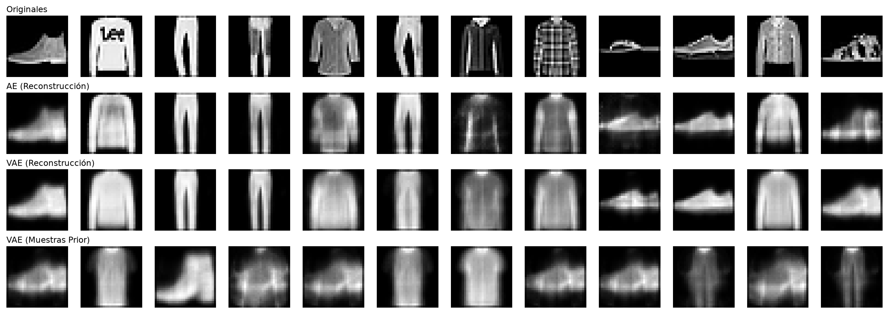
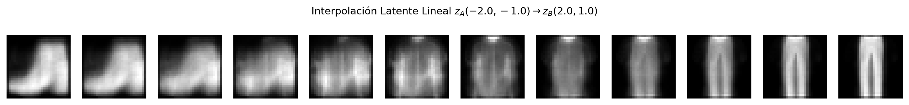
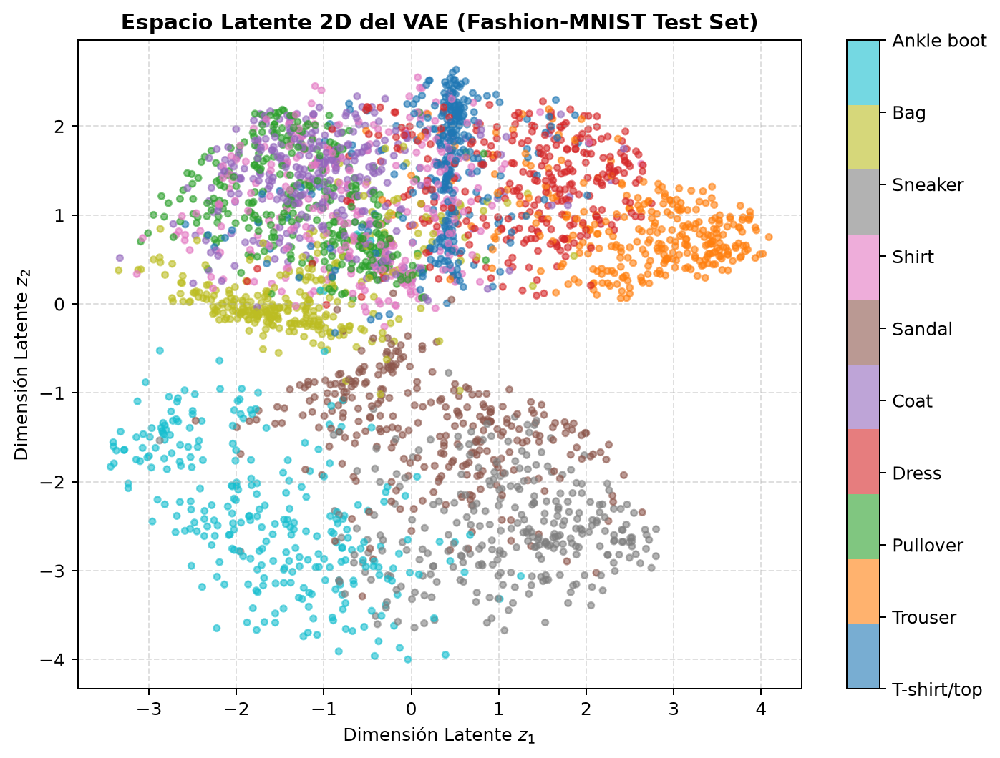

Evaluación cuantitativa sobre las 10,000 imágenes del conjunto de prueba independiente de Fashion-MNIST (28 × 28 × 1):
| Modelo / Enfoque | Espacio Latente (D) | Parámetros | Tiempo Entrenamiento | Reconstrucción Test (BCE) | Reconstrucción Test (MSE) | Regularización KL | Distancia Mínima a Train (L2) | Diversidad Muestral | Tamaño Modelo |
|---|---|---|---|---|---|---|---|---|---|
| Autoencoder Estándar (Baseline) | 16 | 25,888 | 7.86 s | 0.3068 | 0.02029 | N/A (Discontinuo) | N/A (No Generativo) | N/A | 330.66 KB |
| VAE (Variational Autoencoder) Generativo | 2 | 202,516 | 12.44 s | 0.3405 | 0.03299 | 6.3018 | 1.6831 | 5.8485 | 415.66 KB |
El proyecto utiliza Fashion-MNIST (Zalando Research, licencia MIT), integrado por 70,000 imágenes monocanal en escala de grises distribuidas equitativamente en 10 clases de indumentaria (6,000 ejemplos de entrenamiento y 1,000 de prueba por categoría):
images de 28 × 28 × 1 píxeles normalizadas analíticamente a reales en [0.0, 1.0] (float32), y enteros labels {0, ..., 9} que mapean las clases: 0: T-shirt/top, 1: Trouser, 2: Pullover, 3: Dress, 4: Coat, 5: Sandal, 6: Shirt, 7: Sneaker, 8: Bag y 9: Ankle boot.x / 255.0), sin estimar medias ni desviaciones sobre el conjunto de test. Los modelos se entrenaron exclusivamente con x_train (60,000 filas). El conjunto x_test (10,000 filas) se mantuvo estrictamente aislado hasta la evaluación final fuera de muestra.


app/streamlit_app.py), pero suprime texturas de alta frecuencia y produce bordes difusos.Se contó con asistencia de Gemini 3.8 Flash (High) vía Antigravity IDE para depuración de pruebas automatizadas con pytest, vectorización de distancias de vecinos más cercanos y estructuración del Model Card. El estudiante verificó las ecuaciones analíticas de divergencia KL y reparametrización, comprobó el 100% de las 8 pruebas unitarias y asume la autoría y responsabilidad íntegra de la entrega.